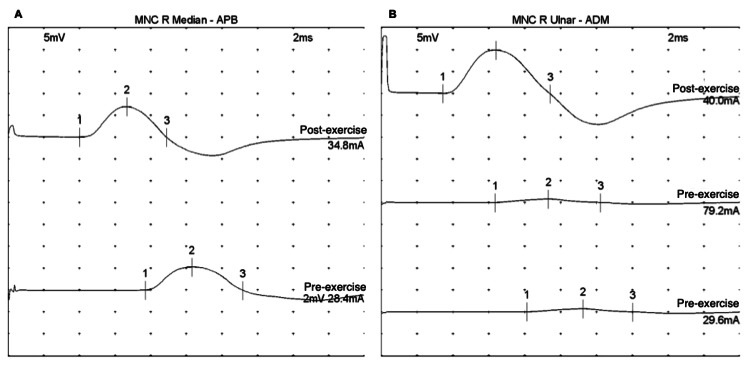

PÁGINA 7 · SÍNTESE DE PROVA
Incremental, VGCC e o que a prova pergunta
A banca identifica LEMS. Em prova de fraqueza, o tratamento cobrado com frequência é o do Guillain-Barré — e sem corticoide. Incremental, anticorpo P/Q-type VGCC e a regra LEMS se identifica; GBS se trata.
Osciloscópio didático do CMAP com potencial incremental no LEMS.
O que o incremento diz
A curva de facilitação do CMAP é a leitura eletrofisiológica da facilitação clínica: amplitude sobe com o estímulo repetido / exercício de 10 s. No LEMS, a amplitude sobe (potencial incremental) — no caso real desta página, mediano +233% e ulnar +1150% após 10 s. Em contraste, MG tende a resposta decremental (oposto da facilitação).

Park SK, Taylor MG · Cureus 2024 · CC BY 4.0 · DOI 10.7759/cureus.60773 · PMC11188003 Fig. 1
O que esta ENMG ancora
O gráfico real mostra o CMAP pré-exercício baixo (painéis inferiores) e o CMAP pós-exercício alto (painéis superiores), em dois nervos diferentes (mediano/APB e ulnar/ADM). O caso publicado traz o número: mediano +233% (2,1 → 7,0 mV), ulnar +1150% (0,8 → 10,0 mV). É a evidência clínica + eletrofisiológica que identifica LEMS.
ENMG na doença de placa
O diagnóstico instrumental de doença de placa usa eletroneuromiografia (ENMG). Ela avalia a via do nervo periférico (2º N), placa e músculo — com registro em agulha e estimulação.
O que a ENMG “vê” no LEMS
Quanto mais se utiliza o músculo sob estimulação, mais forte o sinal muscular fica: aumento da amplitude da onda motora. Esse aumento se chama potencial incremental — tradução eletrofisiológica do ganho de força / facilitação.
Anticorpo
Como boa doença autoimune, o LEMS tem anticorpo anti–canal de cálcio. Sigla de prova: P/Q-type VGCC (canal de cálcio voltagem-dependente tipo P/Q).
Tratamento — com o freio da prova
O tratamento do LEMS lembra o da miastenia: envolve piridostigmina e imunoterapia. A literatura americana é categórica: droga de primeira linha para tratar LEMS é a amifampridina. Em prova de residência no Brasil, o LEMS cai para ser identificado — manifestações, diagnóstico (clínica + ENMG + associação) — pouco tratamento.
Atenção — Amifampridina: lit. americana × realidade BR
Amifampridina = 1ª linha lit. americana confirmada. No Brasil, material NatJus recente trata importação/judicialização e ausência de registro ANVISA de rotina do produto de referência — não trate como “1ª linha SUS na prateleira”. Em prova BR, o eixo seguro é: literária americana de 1ª linha + identificação do LEMS, sem prometer disponibilidade de rotina no SUS.
O tratamento cobrado em prova de fraqueza
O tratamento que costuma cair em prova de fraqueza é o de Guillain-Barré: plasmaférese ou imunoglobulina (IVIG) — e não se faz corticoide. Grande pegadinha: GBS sem corticoide (IVIG ou plasma).
Síntese de prova
| Eixo | O que a prova pede |
|---|---|
| Antissintetase / Jo-1 | Identificar DPI → TC tórax (não neoplasia) |
| EM | Surto 1 g × 3–5 d · sequela = alta · kappa ≈ BOC |
| LEMS | Identificar (facilitação · incremental · CaPC · pupila) |
| GBS | Tratar (IVIG ou plasma · sem corticoide) |
O que a banca quer
Identificar LEMS pelo pacote clínico-eletrofisiológico-oncológico; cobrar tto de GBS sem corticoide; Jo-1 e sequela como regras de ouro.
Pegadinhas de prova
- LEMS → “qual a 1ª linha?” quando o item era de identificação.
- GBS → corticoide (errado).
- Incremental × decremental invertidos.
- Jo-1 → caçar câncer.
Quiz
Q1. Achado eletroneuromiográfico que traduz a facilitação do LEMS:
Gabarito: B. Potencial incremental = amplitude sobe — versão eletrofisiológica da facilitação.
(C) é o polo da MG (decremental). (A) (D) outros territórios.
Por que cair na C: simetrizar ENMG de toda doença de placa.
Quiz
Q2. Sigla de prova do anticorpo do LEMS:
Gabarito: C. P/Q-type VGCC = anti–canal de cálcio voltagem-dependente tipo P/Q.
(A) (B) eixo MG. (D) antissintetase.
Por que cair na A: “placa = anti-AChR” por default.
Quiz
Q3. Em fraqueza neuromuscular, a combinação correta de “o que a prova pede” é:
Gabarito: B. Síntese de prova — LEMS se identifica; GBS se trata (sem corticoide).
(A) inverte o peso de prova. (C) erra os dois. (D) reativa a pegadinha do Jo-1.
Por que cair na A: superestimar tto de LEMS na banca BR e subestimar a urgência terapêutica do GBS.